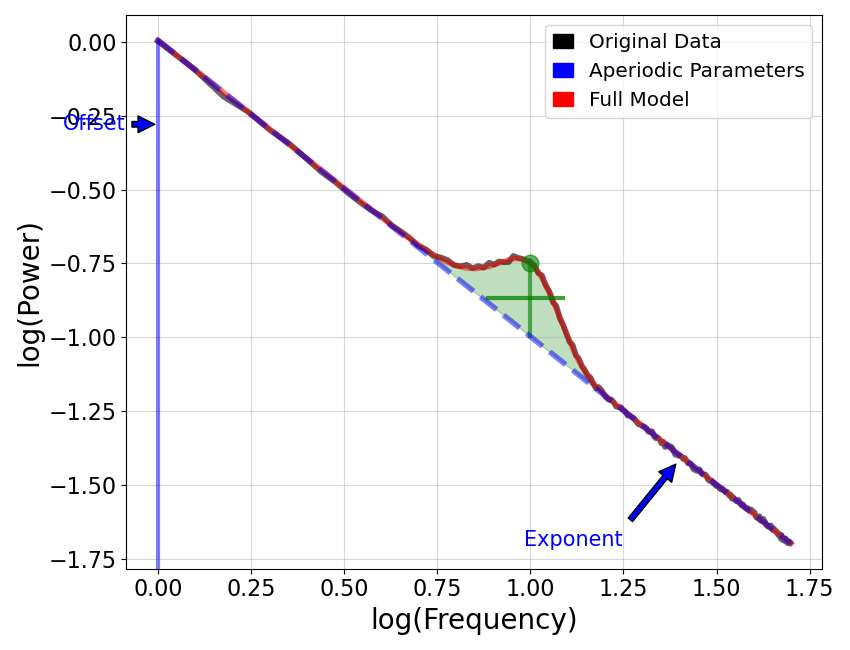
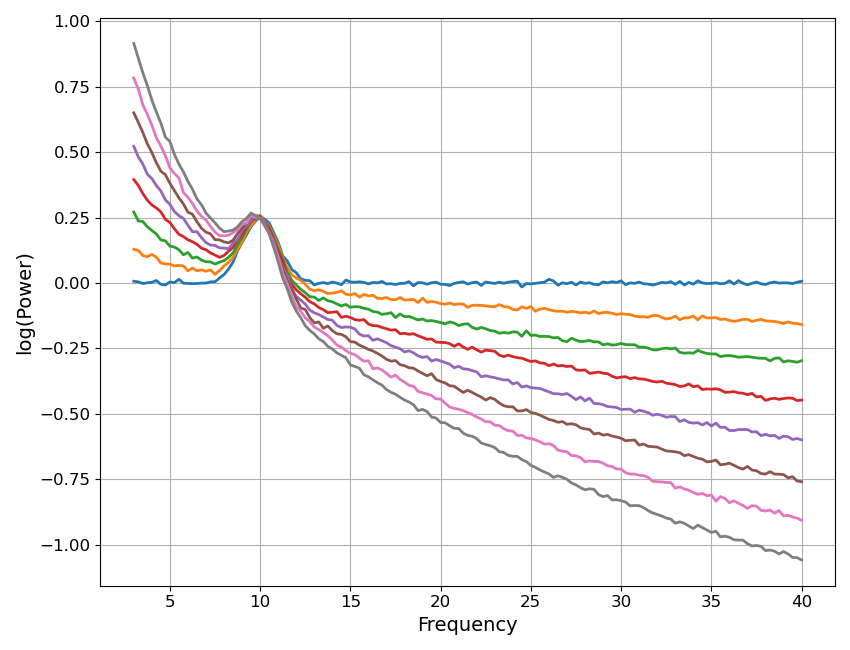
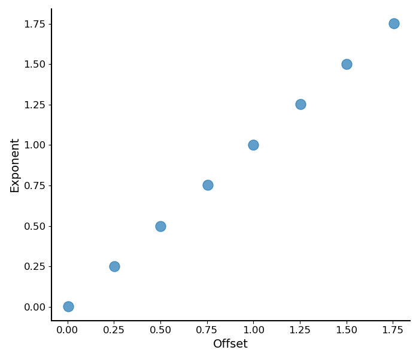
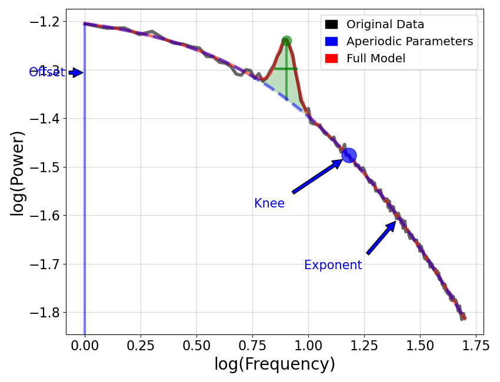

Note
Go to the end to download the full example code.
Aperiodic Parameters¶
Exploring properties and topics related to aperiodic parameters.
from scipy.stats import spearmanr
from specparam import SpectralModel, SpectralGroupModel
from specparam.plts.spectra import plot_spectra
from specparam.plts.annotate import plot_annotated_model
from specparam.plts.aperiodic import plot_aperiodic_params
from specparam.sim.params import Stepper, param_iter
from specparam.sim import sim_power_spectrum, sim_group_power_spectra
from specparam.params.aperiodic import compute_time_constant, compute_knee_frequency
‘Fixed’ Model¶
First, we will explore the ‘fixed’ model, which fits an offset and exponent value to characterize the 1/f-like aperiodic component of the data.
# Simulate an example power spectrum
freqs, powers = sim_power_spectrum(\
[1, 50], {'fixed' : [0, 1]}, {'gaussian' : [10, 0.25, 2]}, freq_res=0.25)
# Initialize model object and fit power spectrum
fm = SpectralModel(min_peak_height=0.1)
fm.fit(freqs, powers)
# Check the aperiodic parameters
fm.results.params.aperiodic.params
array([0.00643739, 1.00392061])
# Plot annotated model of aperiodic parameters
plot_annotated_model(fm, annotate_peaks=False, annotate_aperiodic=True, plt_log=True)

Comparing Offset & Exponent¶
A common analysis of model fit parameters includes examining and comparing changes in the offset and/or exponent values of a set of models, which we will now explore.
To do so, we will start by simulating a set of power spectra with different exponent values.
# Define simulation parameters, stepping across different exponent values
exp_steps = Stepper(0, 2, 0.25)
ap_params = param_iter([1, exp_steps])
# Simulate a group of power spectra
freqs, powers = sim_group_power_spectra(len(exp_steps), [3, 40], {'fixed' : ap_params},
{'gaussian' : [10, 0.25, 1]}, freq_res=0.25, f_rotation=10)
# Plot the set of example power spectra
plot_spectra(freqs, powers, log_powers=True)

# Initialize a group mode object and parameterize the power spectra
fg = SpectralGroupModel()
fg.fit(freqs, powers)
Fitting model across 8 power spectra.
# Extract the aperiodic values of the model fits
ap_values = fg.get_params('aperiodic')
# Plot the aperiodic parameters
plot_aperiodic_params(fg.get_params('aperiodic'))

# Compute the correlation between the offset and exponent
spearmanr(ap_values[0, :], ap_values[1, :])
SignificanceResult(statistic=np.float64(0.9999999999999999), pvalue=np.float64(nan))
What we see above matches the common finding that that the offset and exponent are often highly correlated! This is because if you imagine a change in exponent as the spectrum ‘rotating’ around some frequency value, then (almost) any change in exponent has a corresponding change in offset value! If you note in the above, we actually specified a rotation point around which the exponent changes.
This can also be seen in this animation showing this effect across different rotation points:

Notably this means that while the offset and exponent can change independently (there can be offset changes over and above exponent changes), the baseline expectation is that these two parameters are highly correlated and likely reflect the same change in the data!
Knee Model¶
Next, let’s explore the knee model, which parameterizes the aperiodic component with an offset, knee, and exponent value.
# Generate a power spectrum with a knee
freqs2, powers2 = sim_power_spectrum(\
[1, 50], {'knee' : [0, 15, 1]}, {'gaussian' : [8, 0.125, 0.75]}, freq_res=0.25)
# Initialize model object and fit power spectrum
fm = SpectralModel(min_peak_height=0.05, aperiodic_mode='knee')
fm.fit(freqs2, powers2)
# Plot annotated knee model
plot_annotated_model(fm, annotate_peaks=False, annotate_aperiodic=True, plt_log=True)

# Check the measured aperiodic parameters
fm.results.params.aperiodic.params
array([1.20299523e-02, 1.54841317e+01, 1.00716587e+00])
Knee Frequency¶
You might notice that the knee parameter is not an obvious value. Notably, this parameter value as extracted from the model is something of an abstract quantify based on the formalization of the underlying fit function. A more intuitive measure that we may be interested in is the ‘knee frequency’, which is an estimate of the frequency value at which the knee occurs.
The compute_knee_frequency() function can be used to compute the knee frequency.
# Compute the knee frequency from aperiodic parameters
knee_frequency = compute_knee_frequency(*fm.results.params.aperiodic.params[1:])
print('Knee frequency: ', knee_frequency)
Knee frequency: 15.185214990985552
Time Constant¶
Another interesting property of the knee parameter is that it has a direct relationship to the auto-correlation function, and from there to the empirical time constant of the data.
The compute_time_constant() function can be used to compute the knee-derived
time constant. It takes the knee frequency as the input and calculates the time constant from it.
# Compute the characteristic time constant of a knee value
time_constant = compute_time_constant(knee_frequency)
print('Knee derived time constant: ', time_constant)
Knee derived time constant: 0.010480914704623874
Total running time of the script: (0 minutes 1.266 seconds)